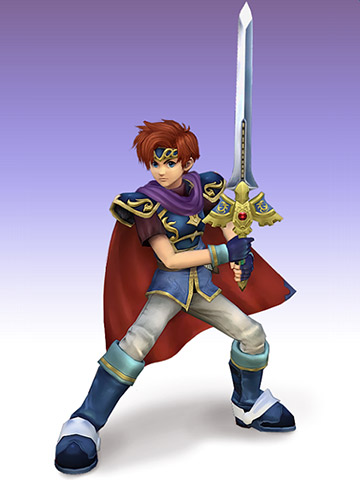

Project M Character Reveal
The leader of Pherae’s army rejoins the battle! Striking a balance between Marth’s speed and Ike’s strength, Roy wields the legendary Sword of Seals to great effect!
In Super Smash Bros. Melee, Roy was outclassed by Marth in many ways, but that is no longer the case for Project M! Along with an improved base move set and a deeper Double Edge Dance, Roy’s improved aerials also give him a bigger punch for opponents caught in the air.
Roy's Our Boy! Changes from Melee to Project M

- Improved base moveset, with extra damage or knockback adjustments tacked on: most of Roy's attacks are now considerably stronger when connecting with the center of the sword.
- Forward tilt is now a quick, long-ranged stab, which inflicts higher damage and can be angled, acting as a much better option than his previous forward tilt; Roy's neutral attack is now stronger while keeping the same speed to compensate for the loss of the former tilt.
- Up tilt now covers a larger, half-circle area above Roy. It additionally starts from his back (the opposite of Marth's), allowing to quickly repel opponents that manage to cross him up.
- Roy's dash attack is cancelable, which allows him to DACUS; this further improves his mobility and is an additional approaching option.
- Down smash is now a spinning sword sweep with less ending lag and better knockback, overall having more utility than his previous one. It also has a flame effect.
- General improvements to his retained aerials, most significantly a much larger and powerful flaming sweetspot on his previously near useless down aerial. For some of his changed aerials, his new neutral aerial has much more range and lingers for longer, while his back aerial is a new horizontal slice that serves as a powerful finisher.
- Flare Blade is more powerful in terms of knockback, and even when uncharged it deals stronger damage than before.
- Double-Edge Dance was improved significantly, with the move being slightly faster and now linking much more fluidly, and the fourth strike serving varieties of purposes. A backwards fourth strike has also been added to the repertoire, being a powerful finishing move against opponents that attempt to reposition themselves behind Roy.
- Fourth downward hit of Double-Edge Dance is now a flaming sword thrust; similar to the third hit, but causing more damage, having more knockback growth and possessing wider hitboxes (indicated by flames) that link more fluidly.
- Blazer's last hit no longer produces set knockback, so it can break guards more reliably and KO enemies off the top at high percentages, seeing more usage as an attack.
- Roy's grab range has been slightly increased.
- Up smash and the second hit of neutral aerial now have flaming graphics.
- Blazer's knockback growth is no longer based on the opponent's weight.
Sources: Project M Character Profile
Project M Roy